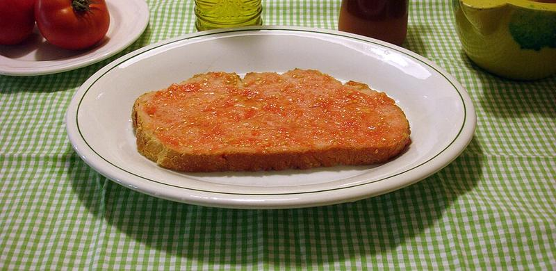
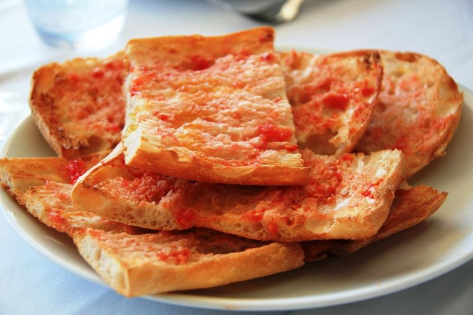

Pa amb tomàquet

El pa amb tomàquet és un dels pilars de la cuina catalana...
Per preparar-lo, talla el pa a llesques gruixudes...
És perfecte com a acompanyament o com a plat complet...


El pa amb tomàquet és un dels pilars de la cuina catalana...
Per preparar-lo, talla el pa a llesques gruixudes...
És perfecte com a acompanyament o com a plat complet...
